…というわけで見島2日目。
この日は
島の北側にある宇津という集落に向かう。
宇津は本村から4キロ程北にあり、途中アップダウンもあるのだが、折角なので島の風情を味わいつつ歩いて行ってみることにした。
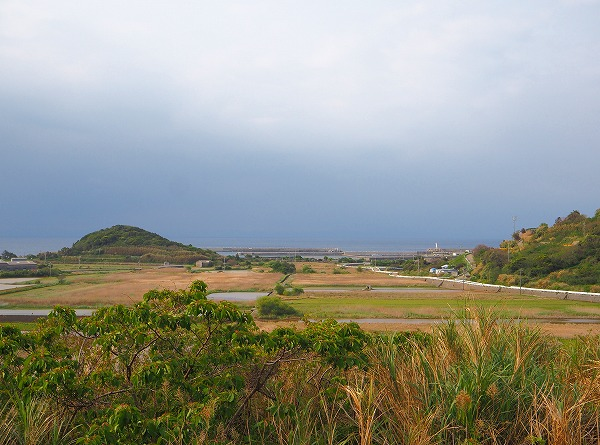
本村からのんびりと歩きながら宇津を目指す。
遠くから本村を眺める。
↑左手の山が見晴山、そのすぐ右に墓所がある。
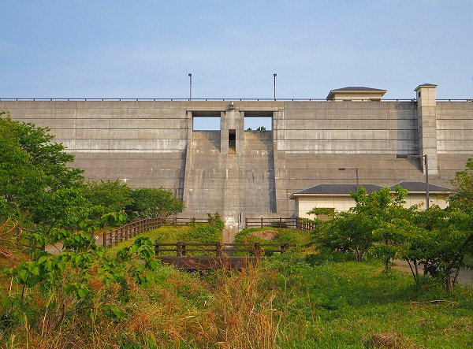
しばらく歩くとダムが見えてくる。
離島にダム、とは珍しいが結構立派なダムである。
その後山道を延々と歩く。
ついついキャリーバッグで来てしまった事を今更ながら後悔する。
結局この行程でキャリーバッグの車輪がガッタガタに摩滅して帰宅後すぐ車輪を交換するという体験をした。
山道を1時間以上歩く際はキャリーバッグは向かない、という事を皆さん覚えておいて下さいね（私は身をもって覚えました）。
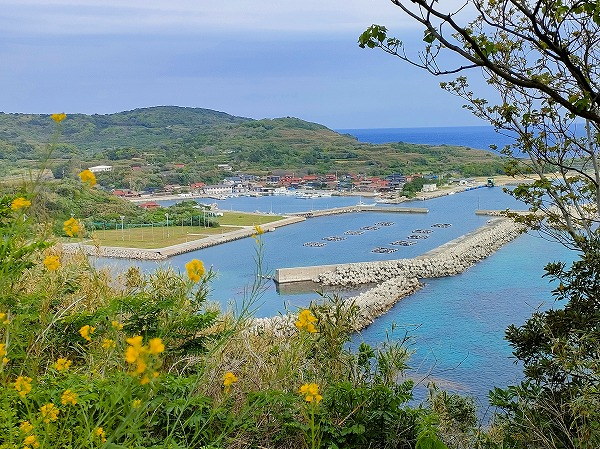
で、ようやく宇津の集落が見えてきた。
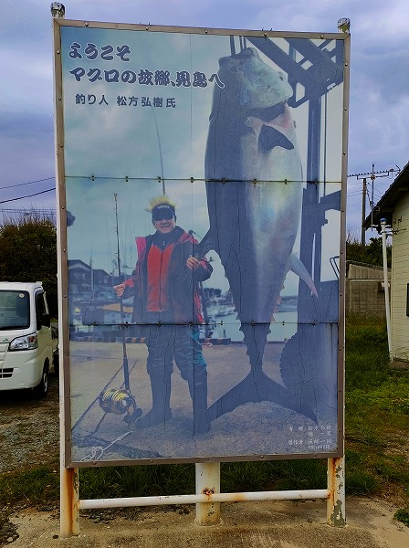
宇津の港には松方弘樹ニキが巨大マグロを釣った写真がデカデカと飾られていた。
見島は大物釣りで有名な島でもあるのだ。
で、宇津の港からほど近い場所に観音堂があるというので早速訪ねてみることにする。
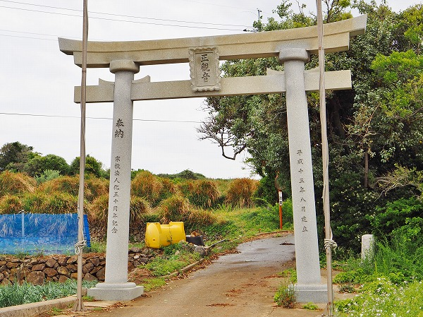
比較的新しい鳥居をくぐる。
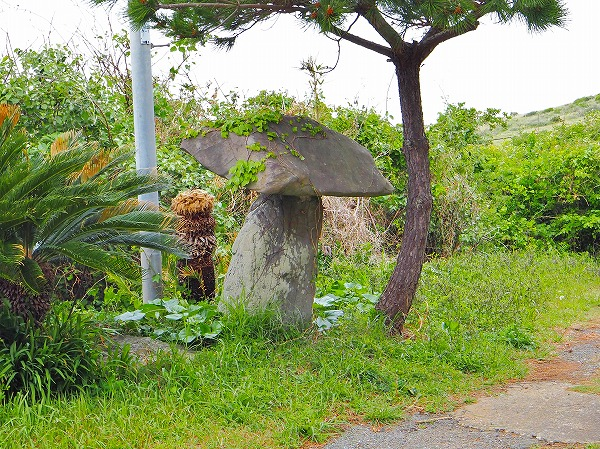
参道には笠石が。
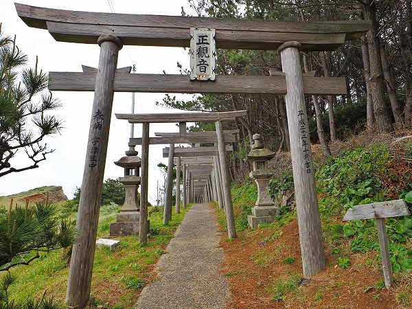
しばらく行くと鳥居が続いている。
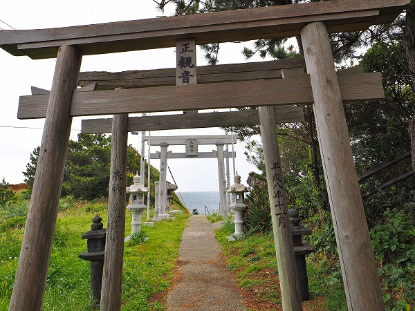
鳥居のトンネルを抜けると海が見えてくる。
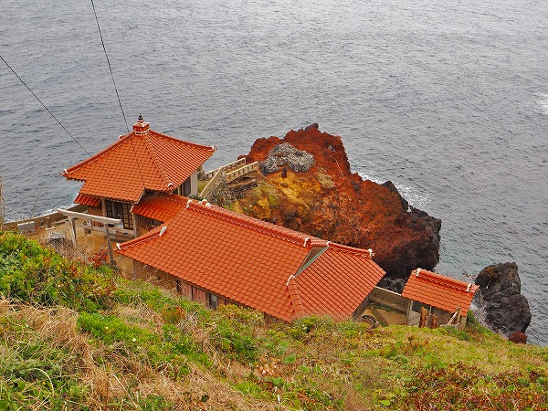
ここがこの島の最大の観光スポットでもある
宇津観音寺である。
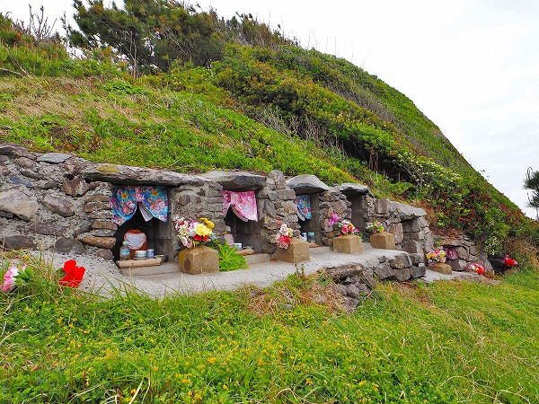
参道途中にある地蔵堂。
これまた石積みの祠である。
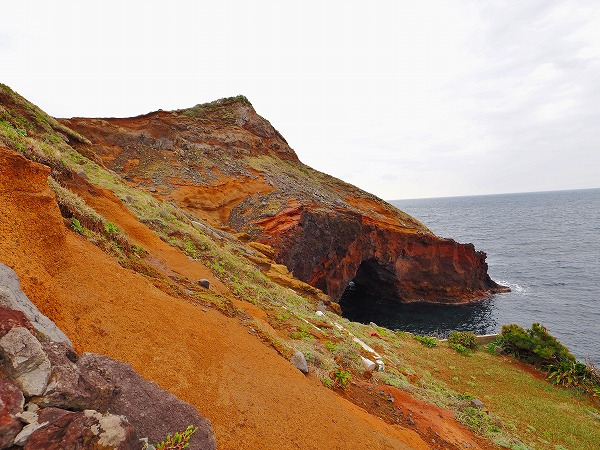
観音堂の脇には赤い大地が広がる。
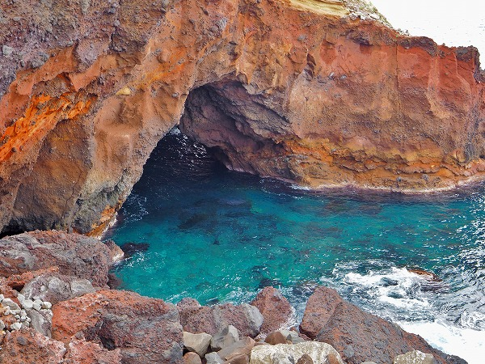
その突端には洞窟がある。
何でもこの島では
死者の霊が通る洞窟と考えられているらしい。
つまりこの場所は死者を供養する霊場なのだ。
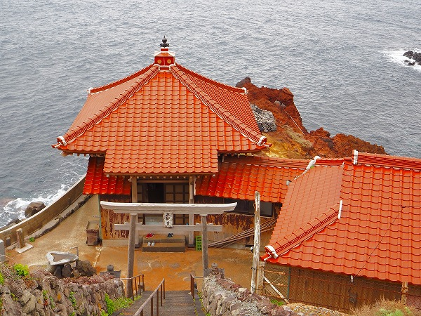
急な階段を下りていく。
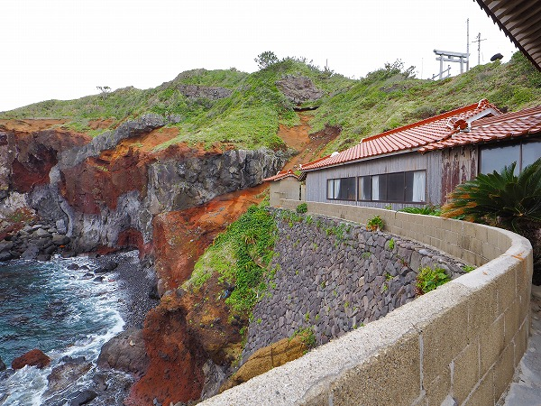
海沿いのギリギリの場所に建物が建っている。
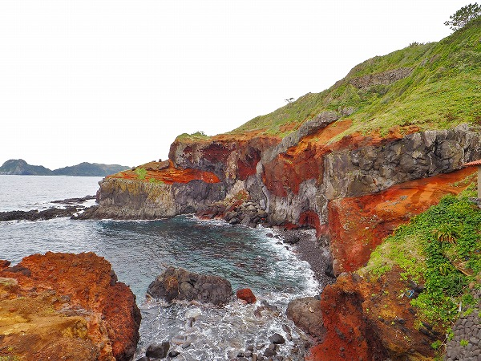
それにしても壮絶な場所だ。
赤土、というよりは鉄分が多い土壌なのだろう。
感覚としては真っ赤な崖、という印象だ。
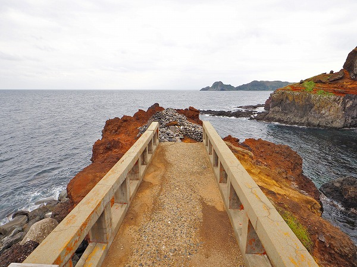
観音堂の先には橋が架かっており、その先にはより赤い岩がそびえている。
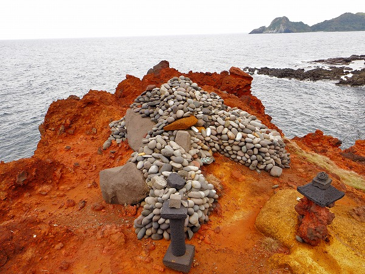
その赤い岩に丸石が積まれている。
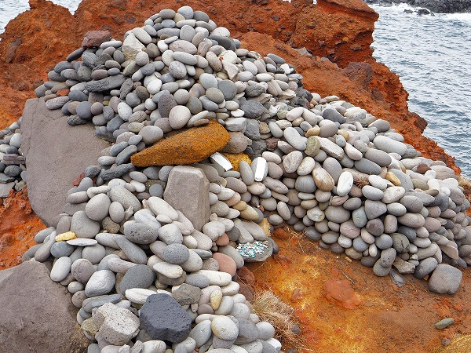
コレは死者の供養のための石で、葬式の翌日、遺族が
戒名を書かれた紙を石に貼ってここに奉納する事になっているのだ。
これを供養石という。

鉄分が多い石なのだろう。真っ赤に錆びた燈籠。
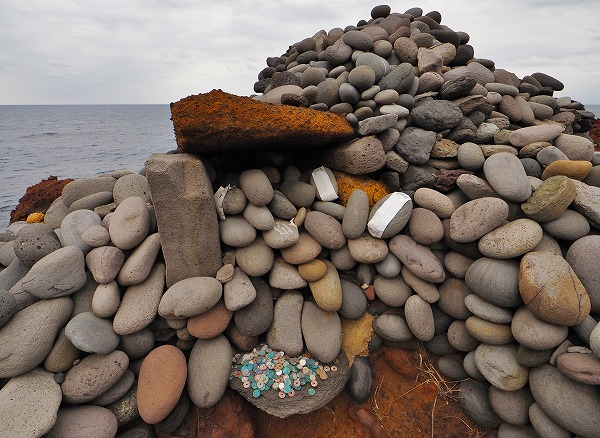
供養石はほぼ丸石である。
この周辺の海岸にはこのような丸石は見られなかったので、他から持ってきたと考えられる。
鉄分が多い所為か、賽銭の十円玉も緑色に変色している。
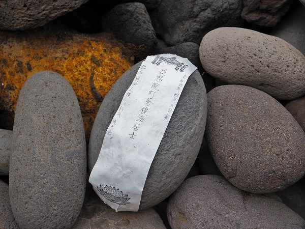
丸石の内のいくつかには戒名が書かれた紙が貼られていた。
恐らく
葬儀の際の野位牌に使われた紙札と思われる。
この紙札が風雨に洗われて消えたら個人の魂が成仏した事になるとされている。
絶海の孤島の外れにある超絶寂しい寺の先にある岩場にすら人々は救いを求めるのだ。
その信仰の壮絶さにただただ恐れおののくばかりである。
で、宇津の墓である。
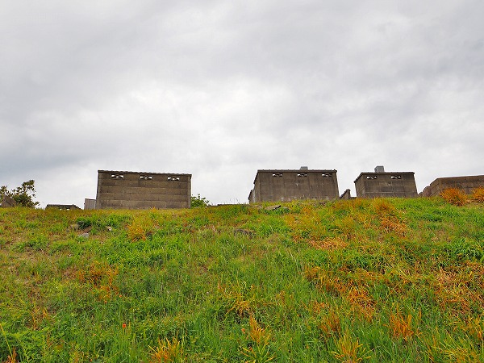
宇津の墓地は港のすぐ近くの小高い丘の上にある。
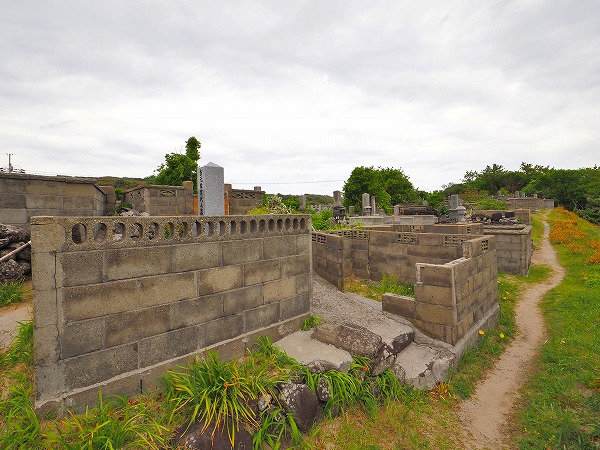
本村の石積みの墓とは違い、こちらは
ブロック積みの墓ばかりだった。
これは単純に海岸に石垣に適した石が無かったという事だと思う。
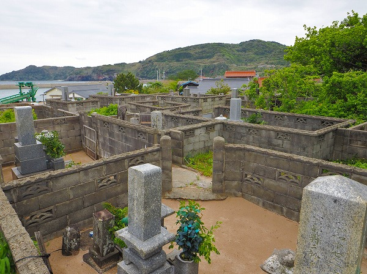
しかしそれ以外は本村の墓と似たような構造で、
ブロック塀の迷路が延々と続く。
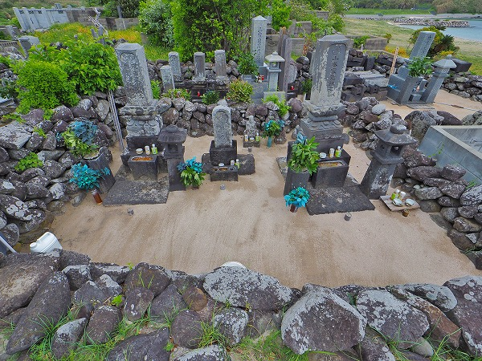
本村の墓との一番の違いは
墓の中に砂が敷き詰められていて、そこが綺麗に掃き清められている事だ。
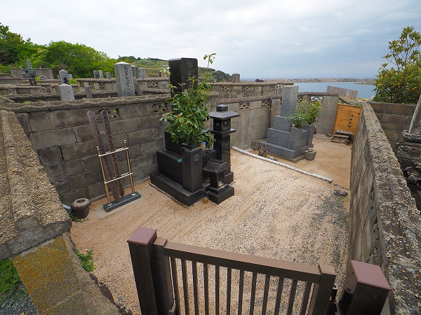
チョット中に入れないレベルに掃き清められている。
恐らく本村の墓地よりも歴史は浅いのだろうが、
祖先を敬う気持ちはかなりガチなんだろう、という事はビシビシ伝わって来た。
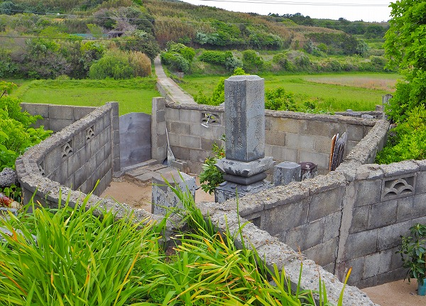
基本的に四角い墓地が多かったが、このように変形的な墓地もあってそれがまた魅力的に思えるのよ。
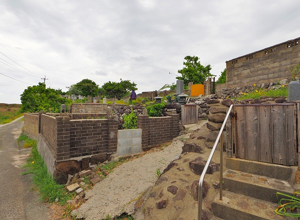
多くの墓地は入口に蓋がされていた。
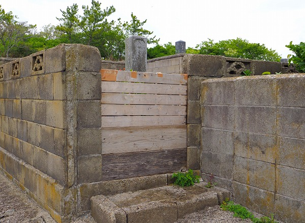
これもまた本村にはなく、宇津でしか見られない特徴だ。
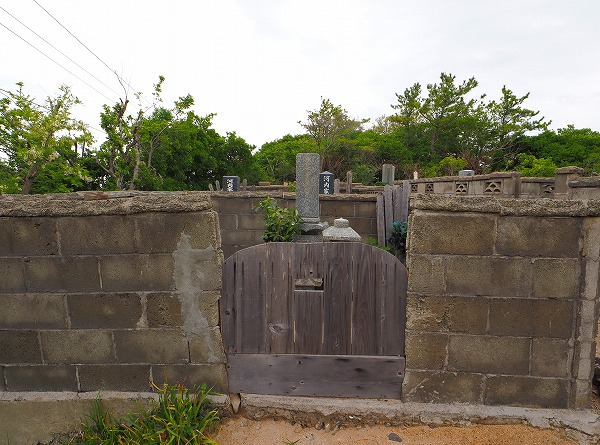
この
入口の蓋の意味を考えてみた。
本村の墓地では見られなかった墓地の入口の蓋。
これはひょっとして
放牧されている牛が墓を荒らさないために設けたものなのではなかろうか。
先にも述べたが見島には和牛の原形ともいえる見島牛が放牧されている。
今では本村や宇津の集落から離れた場所で放牧されているが、ひょっとしたら以前は集落に近い場所で放牧されていたのではなかろうか。
だとしたらその牛が誤って墓地に入り込んでしまう可能性も大いにある筈だ。
そのために墓地を石垣やブロック塀で囲った、と考えるのは突飛な想像だろうか。
少なくとも風が強いから、という理由よりはずっと合理的に思えるのだが、如何だろうか？
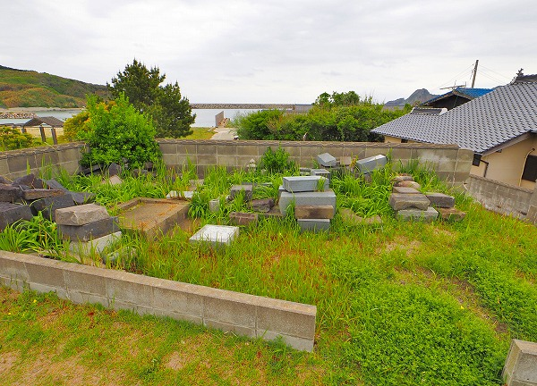
無縁になった墓。
宇津の墓地には人はおらず詳しい話を聞くことが出来なかった。
従って私の思った荒唐無稽な思いつきも肯定も否定もされることなく帰りの船を待つこととなった。
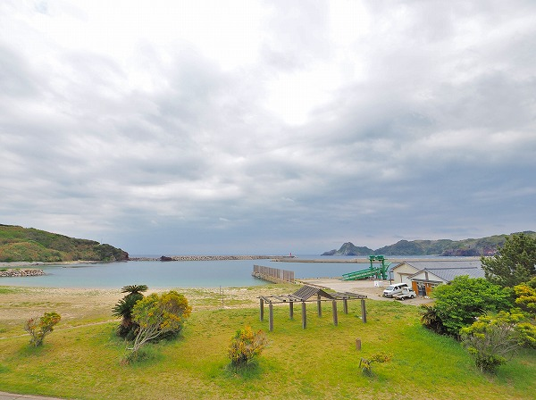
港の隣にはビーチがあった。
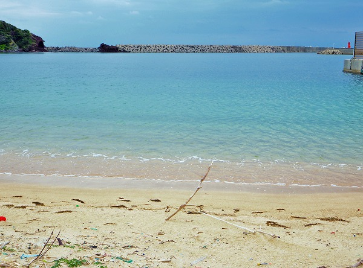
綺麗な海だったが、泳ぐにはまだ早い。
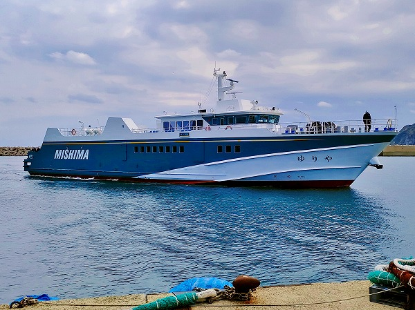
そうこうしているうちに船がやって来た。
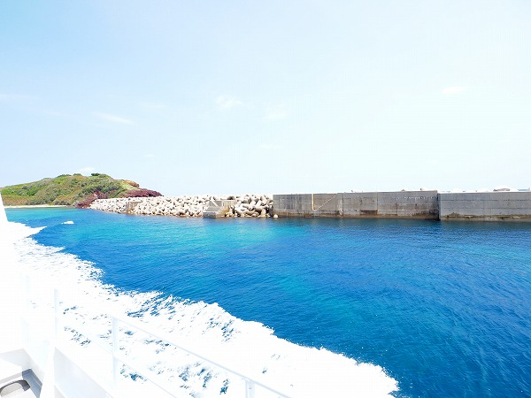
名残り惜しいがこれにてタイムアップである。
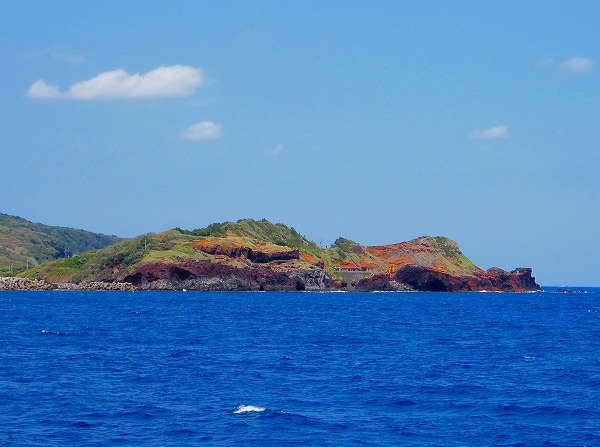
港から離れて沖に出たら先程の観音堂が見えてきた。
さらば見島。また来る日まで。